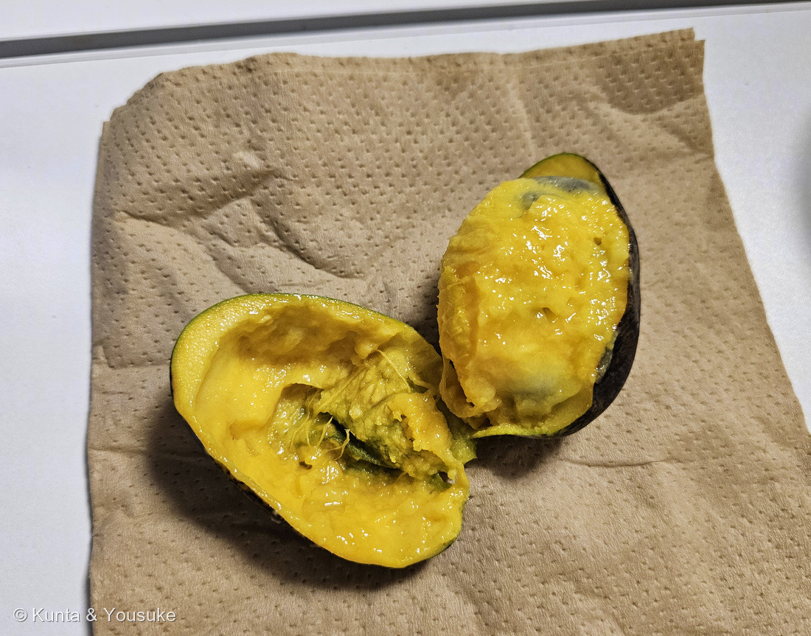
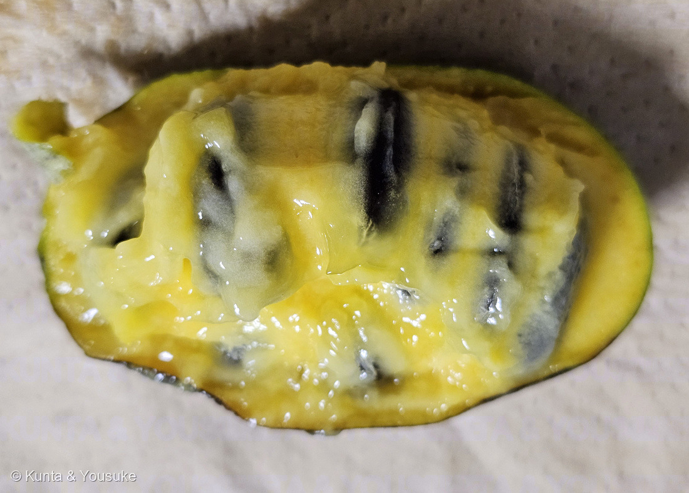
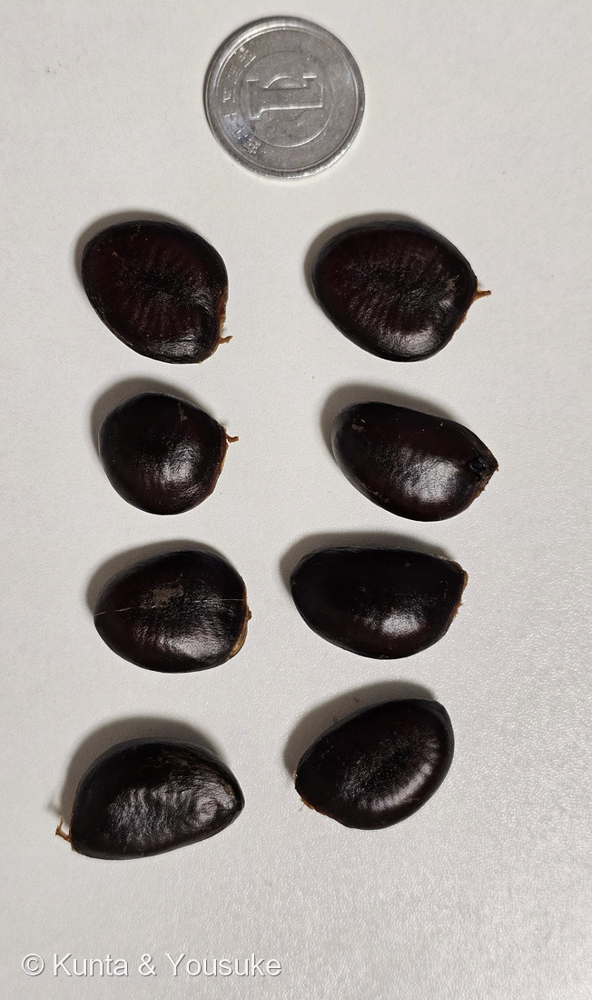
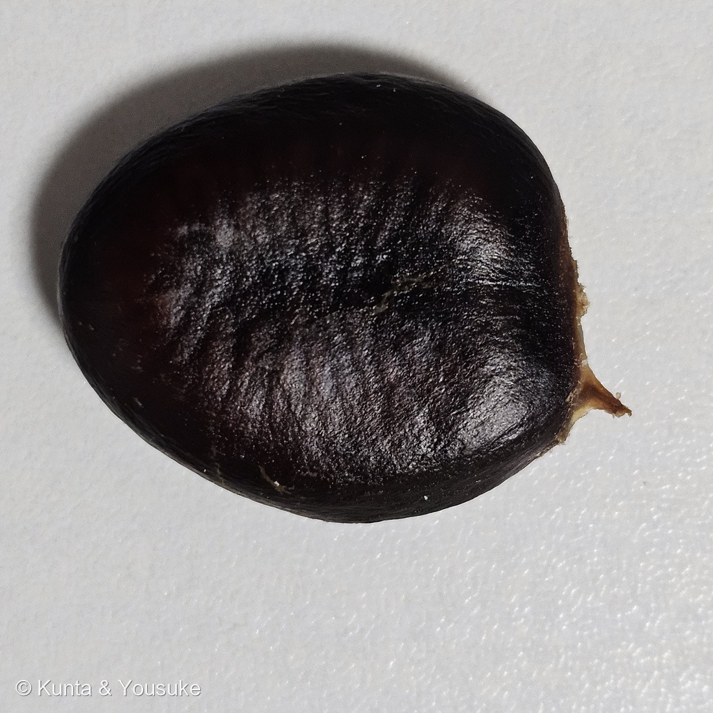
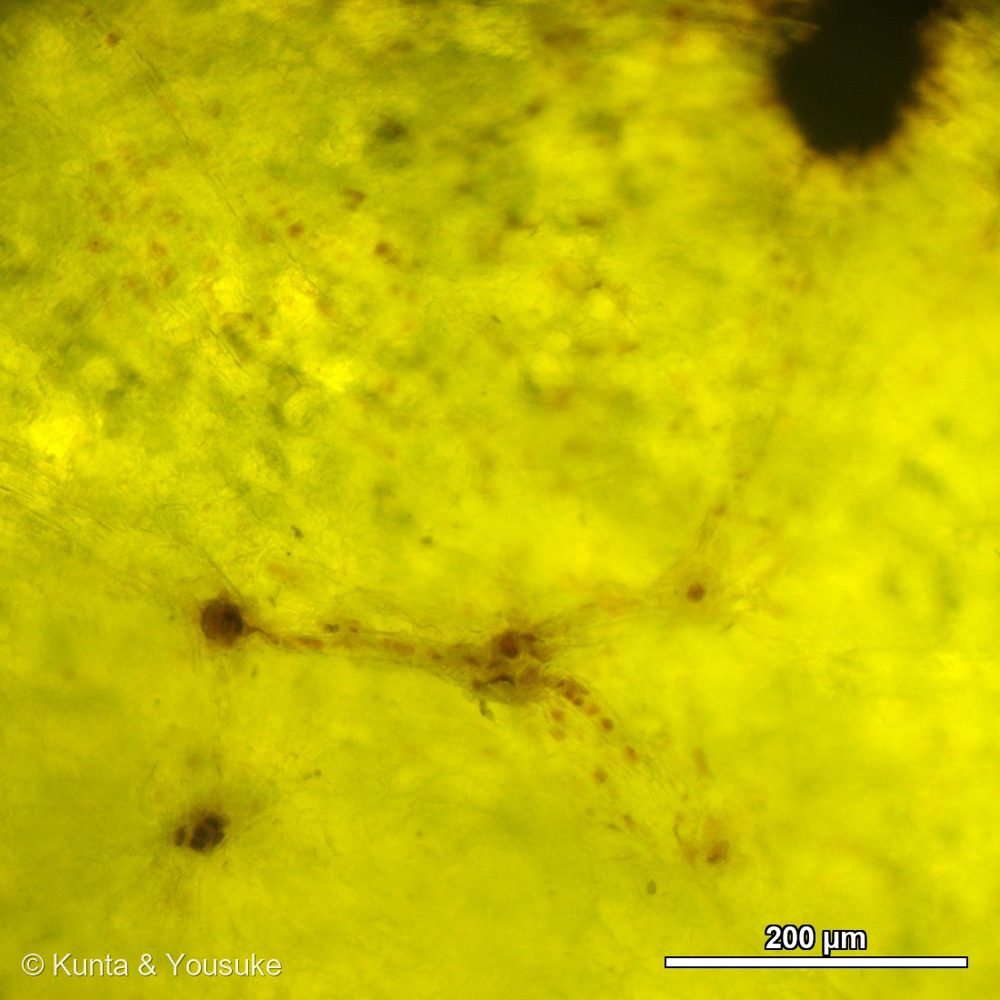
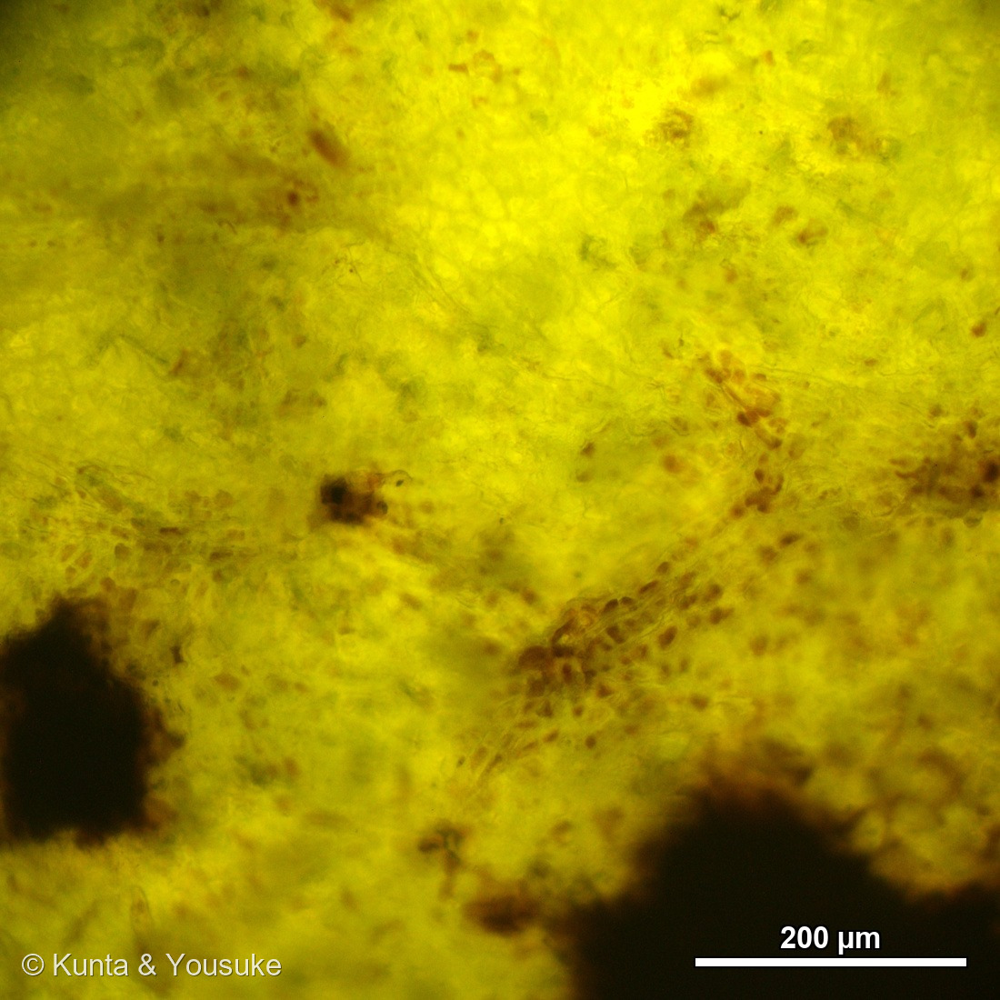
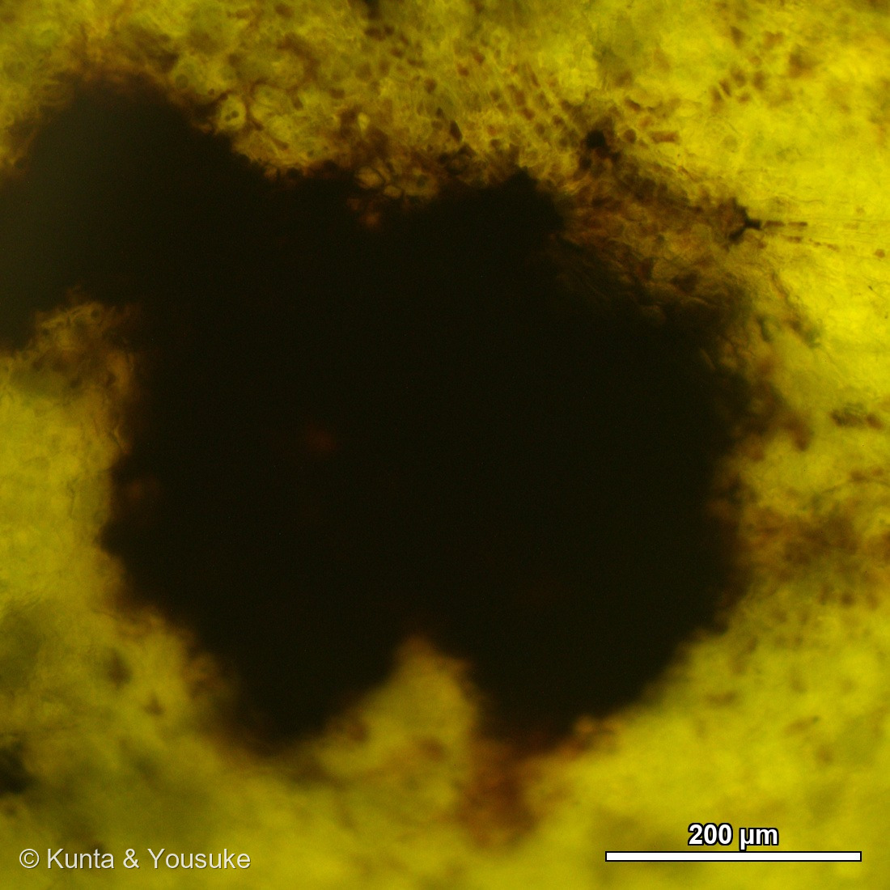

地図を読み込んでいるよ…
🔍 写真も地図も、押しているあいだ拡大して見られるよ（スマホは指を置いてすこし待ってね）。
🌍 の地図＝この子がもともと自生している場所を緑に。北アメリカ東部。アメリカ合衆国のニューヨーク州西部からカナダ南部のオンタリオ州、ミシガン・イリノイ・アイオワまで西へ、南はネブラスカ東部・オクラホマ東部・テキサス東部まで、東はアパラチア山脈とフロリダ半島のつけ根まで（アメリカ農務省森林局）。落葉樹の森の中、谷の斜面・川ぞい・氾濫原に生える。
⭐⭐ふるさとは北アメリカの東部だよ＝アメリカ合衆国のニューヨーク州西部から、西はミシガン・イリノイ・アイオワ、南はネブラスカ東部・オクラホマ東部・テキサス東部、東はアパラチア山脈とフロリダ半島のつけ根まで／カナダは南部のオンタリオ州だけ（アメリカ農務省森林局）。⚠⚠この緑は、ほんとうよりずっと広く見えているよ＝地図は国までしか塗れないので、アメリカもカナダも国ぜんたいが緑になってしまうから＝⭐ほんとうにいるのは東半分の、落葉樹の森の中だけ（谷の斜面・川ぞい・氾濫原）。⚠日本は塗っていない＝明治のころに来て、戦後に各地で植えられた木で、日本はふるさとじゃないよ。⭐⭐⭐そして、この緑は152 ユリノキの緑とほとんど同じ＝同じモクレン目で、同じ北アメリカ東部の生まれ＝⭐大きな葉と、うつむく花と、同じ森。二人はずいぶん近いところにいるんだね。⭐⭐おまけのアケビは、この緑には出てこない＝あちらは日本・朝鮮半島・中国の生まれで、正反対の側にいる子だよ。
⚠ 地図は国（日本と中国だけ県・省）までしか塗れないから、ほんとうの分布より広く見えていることがあるよ。地図はだいたいの場所。正確なところは、上の文を見てね。
ポポー
Asimina triloba (L.) Dunal
別名 · ポーポー／パポー／ポポーノキ／アケビガキ 「森のカスタードクリーム」とも 原産 · 北アメリカ東部
バンレイシ科 · Annonaceae（アシミナ属 Asimina · モクレン目 Magnoliales）── ⭐⭐⭐図鑑で初めての科（113科目）／⭐同じモクレン目には 152 ユリノキ（モクレン科）がいるよ
燻太さんの言葉「今日は、珍しいものをもらったよ。ポポーっていう果物。表面が黒くなっているから、それなりに熟していそう。森のカスタードって別名もあるみたい」── ⭐⭐「黒くなっているから熟していそう」は、出典どおりに当たっていたよ
食べたあとの燻太さん「バナナとマンゴー、パイナップルを混ぜたかのような味で、尾を引くような複雑な風味だった」── ⭐⭐⭐⭐⭐論文の官能記述が “mango, pineapple and banana-like”＝そのまま同じ3つだったよ
名前と学名の由来 ── 名前の中に、種がならんでいる
- ⭐⭐⭐⭐⭐属名 Asimina は、アメリカ先住民のことばから来ている。──アメリカのフランス語 assimine を通って、イリノイ語（アルゴンキン語族）の rassimina から。⭐⭐そして、その中身がすごい＝rassi ＝「縦に等分に分けられた」＋ mina ＝「種」。
- ⭐⭐⭐つまり Asimina は、「縦にならんだ種」という名前。──この実を割った人が、いちばん最初に目をとめたのが、中の種のならびかただったんだね。
- ✅⭐⭐⭐⭐⭐そして、その日の夜に確かめた——種は、ほんとうに縦の一列にならんでいた（写真⑤）。⭐何百年もまえにこの実を割った人が見たものと、燻太さんが見たものが、同じだったんだ。⭐下の節を見てね。
- ⭐種小名 triloba は、ラテン語で「三つの裂片の」。⚠どの部分を指しているのか、はっきり書いた出典は見つけられなかった。⭐でも、この子の花は「3」でできている＝萼片は3枚、花弁は3〜4個ずつの輪が2つ（三河の植物観察）＝⭐そのあたりを言っているんだと思う。
- ⭐⭐和名の「ポポー」は、英語の pawpaw をそのまま写したもの。⚠標準和名は「ポーポー」だけれど、「ポポー」と呼ばれることのほうが多いよ。
- ⭐⭐⭐もうひとつの名「アケビガキ」の由来は、諸説ある（東邦大学薬草園）＝①アケビのような色の花が咲き、カキが熟したような味がするから／②実の形がアケビ、花の外見がカキに似ているから。──⭐どちらの説でも、アケビとカキの二人がかりで名前になっている。
⭐⭐⭐⭐⭐ 割ってみた ── 名前は、ほんとうだった（2026.09.09 夜）




2026.09.09 夜・燻太さんのおうち 🔍 押しているあいだ拡大して見られるよ。
- ⭐⭐⭐⭐⭐種は、縦の一列にならんでいた（写真⑤）。──属名 Asimina ＝ rassi「縦に等分に分けられた」＋ mina「種」。⭐名前が、そのまま目の前にあった。
- ⭐⭐数は8個。⭐1円玉（直径ちょうど20.0mm）と並べて測ったよ（写真⑥）。
- ⭐長径＝17.9〜23.5 mm（平均 21.6）──三河「長さ1.5〜2.5cm」／英語版Wikipedia「15〜25mm」の、どちらの幅にも入った。
- ⭐短径＝14.1〜17.4 mm（平均 16.1）。
- ⭐色＝つやのある黒褐色──三河「褐色〜栗色」のとおり。
- ⭐⭐どちらの出典の幅にも、きれいに入った。⚠この数字はぼくが写真から測ったもの（1円玉の直径は造幣局の規格で20.0mm ちょうど）。
- ⭐果肉は濃い黄色で、とろりとしていた（写真④）＝英語版Wikipedia「pale yellow, custardy, spoonable flesh」。⭐この黄色はカロテノイドで、8品種の測定では1.5〜6.1 µg/g（平均3.9）と報告されているよ。
- ⭐種のまわりには繊維のようなものがあり、中央は少し緑がかっていた（写真④）。⏳この緑がかった部分が何なのかは、まだ決めていない。
⭐⭐⭐⭐⭐ 味と香り ── 燻太さんが挙げた3つの果物は、論文と同じだった
⭐燻太さんの言葉：「バナナとマンゴー、パイナップルを混ぜたかのような味で、尾を引くような複雑な風味だった」「香りはとても強くて、箱に入れて持ち帰っていたけど、開けた瞬間ぶわっと甘く濃厚な香りが広がってきた」
- ⭐⭐⭐⭐⭐これ、気のせいじゃないんだ。──ポポーの香りを調べた論文（Zyzak ら）の原文は、こう書いている：
「…contribute to give the sweet, creamy, mango, pineapple and banana-like character used to describe the flavor of pawpaw fruit.」 - ⭐⭐⭐燻太さんが挙げた3つ（バナナ・マンゴー・パイナップル）と、そのまま同じ3つ。⚠論文を見るまえに言った言葉だよ。
- ⭐⭐なぜ同じになるかというと、ほんとうに同じ分子を嗅いでいるから。──ポポーの主な香り成分はエステル類（収穫時には methyl octanoate・ethyl octanoate・ethyl hexanoate・methyl hexanoate が優勢）＝⭐このエステルたちは、バナナやパイナップルやマンゴーの香りも作っている分子なんだ。
- ⭐⭐⭐「尾を引くような複雑な風味」も、そのとおり＝同じ論文は、ポポーから44種類の香気成分を見つけて、そのうち15種類はポポーで初めてだったと書いている（homofuraneol・eugenol・vanillin・γ-オクタラクトン・δ-オクタラクトンなど）。⭐バニラや丁子（クローブ）やラクトン（ミルクっぽい甘さ）まで入っているのなら、単純な味になるほうがおかしいよね。
- ⭐⭐甘さの数字＝29品種の糖度（°Brix）は 13.9〜28.0%（平均 20.4%）。⭐ふつうのリンゴやナシが 13〜15% くらいだから、それよりずっと甘い。
⭐⭐⭐⭐ 食感が、場所でちがった ── これは出典より細かい観察だよ
⭐燻太さんの言葉：「種の近くはとろとろだけど、果皮付近は若干デンプン質」
- ⭐⭐追熟でデンプンが糖に変わることは、報告がある＝「a decline in starch content from a peak in unripe fruit through the ripening process」（Taytwo という品種1つでの測定）。⭐未熟な実でデンプンが最大で、熟すにつれて減っていく。
- ⚠⚠でも、果実の場所ごとのちがいを書いた出典は、ぼくには見つけられなかった（61品種をまとめた総説も、部位べつの硬さや糖度には触れていない）。──⭐⭐つまり、燻太さんの観察のほうが、出典より細かい。
- ⭐ぼくの読みかた（⚠仮説だよ）＝果皮に近いところがいちばん最後に熟すのだとしたら、そこにデンプンが残っているのは筋が通る。⏳次にポポーに会えたら、種の近くと皮の近くを別々に味わってみて、確かめてほしいな。
⭐⭐⭐⭐ 種を包む膜 ── 「ライチを思い出した」は、するどかった
⭐燻太さんの言葉：「種の周りは残った果肉と膜で包まれていて、爪で簡単に破けたよ。種のへその部分にその膜がつながっていて、ライチの仮種皮を思い出させる雰囲気だった」
- ⭐⭐⭐⭐⭐バンレイシ科の記載を引いてみたら、こう書いてあった（DELTA・Watson & Dallwitz「Annonaceae」）：
「Aril absent, or present; a true aril; … adnate to hilum; fleshy; of funicular origin; encompassing, or basal.」 - ⭐⭐⭐訳すと＝仮種皮は「無いこともあれば、有ることもある」。有るときは本物の仮種皮で、へそ（臍）に癒着していて、珠柄（種を実につないでいた柄）から生まれ、種ぜんたいを包むか、根もとだけにつく。
- ⭐⭐⭐⭐燻太さんが見た「へそにつながっている膜」は、この記述とぴったり重なる。──そして「ライチを思い出した」のも当たっていて、277 ライチの白いプリプリした部分こそ、まさに仮種皮なんだ。
- ⚠⚠でも、ここで止めておくね＝「ポポーに仮種皮がある」と名指しで書いた出典は、見つけられなかった。⚠しかも記載そのものが割れている＝Goldberg は「often arillate（しばしば仮種皮がある）」、Corner は「mostly exarillate（たいてい仮種皮が無い）」と、同じ科について正反対のことを言っている。
- ⭐⭐だから、いまの図鑑の答えは「仮種皮かもしれない」まで。⏳決めるための見かたは、はっきりしているよ＝⭐膜がへその一点だけから出ていれば仮種皮／種の全面にぴったり張りついているなら、種皮の外側の層（sarcotesta）か、部屋の内側の膜。
- ⭐⭐もしほんとうに仮種皮なら、図鑑の仮種皮のなかまは4人になる＝276 マサキ・128 ザクロ・277 ライチ・そしてこの子。
- ⭐ついでに、もうひとつ＝バンレイシ科の胚乳は ruminate（しわしわに入りくんでいる）と書かれている。⏳種を1つ割ってみたら、中に縞模様が見えるかもしれないよ（⚠食べないでね）。
🔬⭐⭐⭐⭐⭐ 皮の顕微鏡観察 ── 黒ずみは「点」から始まっていた



果皮を表皮側から（SWIFT Swiftcam SC2503・対物10倍／0.2395 µm/px・視野 約1.1mm） 🔍 押しているあいだ拡大して見られるよ。
⚠まず、条件から＝表皮側から見た像だよ（⭐燻太さんの言葉＝「横断面は果皮が柔らかすぎて難しかったから、表皮側だけ」）。⭐カメラが焼きこんだスケールバーと、図鑑の較正値（cam25mp_05x）は 1.3% で一致した＝独立に測った2つが合ったので、この数字は信じていいよ。
- ⭐⭐⭐⭐⭐3枚が、そのまま「黒ずみの3段階」になっていた：
- ⭐⑧ はじまり＝視野に占める黒 3.3%／いちばん大きい斑 155 × 130 µm
- ⭐⑨ 広がったところ＝11.1%／439 × 326 µm
- ⭐⑩ いちばん進んだところ＝25.6%／649 × 542 µm
- ⭐⭐⭐どの写真にも、大きな斑とは別に 17〜44 µm くらいの小さな黒い点が散らばっている。⭐そして斑のふちはなめらかではなく、ギザギザ。──⭐⭐にじみ広がるのではなく、小さい点が増えて、くっついて大きくなるように見えるよ。
- ⭐⭐⭐⑧がいちばん面白い＝黒い点から放射状に細い褐色の筋が伸びていて、画面の中央には枝分かれした網（節に褐色の粒が数珠つなぎ）が走っている。⭐黒い点は、その網の「節」にあるように見える。
- ⭐⭐⭐⭐⭐そして、出典と話が合った——ポポーの黒ずみは酵素による褐変だと書かれている：
「PPO is responsible for enzymatic browning during ripening, postharvest handling, storage, and processing.」（PPO＝ポリフェノールオキシダーゼ） - ⭐⭐⭐⭐しかも、この果実はPPOにとって居心地がよすぎる＝果肉のpHは 5.5〜6.8（平均6.1）／PPOの活性のピークは pH 6.5〜7.0＝⭐⭐ほとんど重なっている。──⭐だから、この子はあんなに速く黒くなるんだね。
- ⭐⭐⭐酵素的褐変は、細胞の中の仕切りが壊れて、酵素とフェノールが出会ったときに起きる＝つまり細胞ごとに起きる。⭐写真の「点から始まって、合体して広がる」は、それとよく合う（⚠この読み合わせはぼくがしたもので、出典が「細胞ごと」と書いているわけではないよ）。
⚠⚠ この写真では、まだ言えないことが2つある
- ⚠⚠①「皮のどの層で起きているか」は決められない。──表皮側から見下ろしているだけなので、深さが分からないんだ。⭐これは横断面でしか解けない＝⏳燻太さんの「果皮が柔らかすぎた」が、そのまま次の宿題になったよ。
- ⚠⚠②細胞の輪郭がぼやけていて、数えられない。──やわらかくて厚みのある組織を上から透かして見ているので、奥行きのボケが乗っている。⭐だから「17〜44µm ＝ 細胞1個ぶん」も、そう見えるまでしか言えない。
- ⚠⑧の「網」が何なのかも、まだ決めていない＝細い維管束（葉脈にあたるもの）かもしれないし、分泌する細胞の列かもしれない。⭐決めつけないでおくね。
⭐⭐⭐⭐⭐ 熱帯の科から、ひとりだけ北へ出てきた
- ⭐⭐バンレイシ科（Annonaceae）は、ほとんどが熱帯・亜熱帯の科。──シャカトウ（バンレイシ）、チェリモヤ、アテモヤ……名前を聞くだけで暑い場所の果物だよね。
- ⭐⭐⭐⭐⭐そのなかで、この子だけが、温帯の北アメリカで生きている。アシミナ属は、バンレイシ科でただひとつ温帯に出てきた属で、そのなかでも A. triloba がいちばん北まで行った子。
- ⭐⭐⭐だから、日本でも育つ。──南国の果物の顔をしているのに、北海道でも育てられるんだ。⭐「南の果物なのに寒さに強い」のではなく、「もともと温帯の木」だったんだね。
- ⭐ふるさとは、落葉樹の森の中＝谷の斜面・川ぞい・氾濫原（アメリカ農務省森林局）。⭐明るい南国の畑ではなく、湿った森の日かげにいる木だよ。
- ⭐⭐ふえかたも森の木らしい＝根から出るひこばえ（root sucker）で広がって、まとまった藪をつくるのがいちばん多いふえかた（同）。⭐種からの発芽は、胚が眠っているのでとても遅いんだって。
- ⭐⭐⭐そして、この木にだけ来る蝶がいる＝ゼブラアゲハ（Eurytides marcellus）。⭐その幼虫は、アシミナ属の葉しか食べない。──⭐⭐熱帯の科からひとり北へ出てきた木に、その木だけを頼りにする蝶がついてきたんだね。
⭐⭐⭐⭐ 「黒くなっているから熟していそう」は、当たっているよ
- ⭐⭐⭐⭐⭐燻太さんの読みは、そのとおり。──旬の果物百科は、この子のことを「収穫後の熟変が早く、すぐに表面が黒ずんでしまう」「熟すと黒いシミのような部分が出てきて」と書いている。
- ⭐⭐つまり、この黒はいたんだのではなく、熟したしるし。⭐ふつうの果物なら「黒い＝そろそろ危ない」だけれど、この子はちがうんだ。
- ⭐⭐⭐写真②と③を見くらべてみて。──同じ実なのに、②の面はほとんど黒く、③の面はまだ黄緑で、黒い点がぽつぽつ出はじめたところ。⭐熟しかたに、面で差が出ているんだね。
- ⭐⭐そして、この「すぐ黒くなる」が、この子がお店にあまり並ばない理由＝日持ちがせず流通が難しい（東邦大学薬草園）＝⭐旬の果物百科はこの子を「地産地消型の果物」と呼んでいる。⭐日本の産地は、愛媛県大洲市長浜町櫛生・茨城県日立市十王町など。
- ✅⭐⭐⭐⭐⭐そして、その夜に顕微鏡で中身を見た＝黒ずみは17〜44µmの小さな点から始まって、合体して斑になっていた＝⭐犯人はPPO（ポリフェノールオキシダーゼ）で、しかもこの果実のpHはPPOがいちばん働きやすい範囲だった＝⭐くわしくは上の顕微鏡の節へ。
- ⭐大きさも測ったよ＝ものさしと見くらべて、長径 約6.8cm・短径 約4.4cm（⚠ぼくが写真から測った値だよ）。⭐三河の植物観察は「長さ5〜15cm」と書いているから、小さめのほうの実だね。
⭐⭐⭐ 日本に来て、いちど広まって、いちど忘れられた
- ⭐日本へは明治のころには入っていたと言われる。⭐⭐そして戦後、日本各地で植えられた——成長が早く、栄養価が高く、病害虫に強くて無農薬でも育つ、という理由で（東邦大学薬草園ほか）。
- ⚠⚠でも、そのあとすたれてしまった。理由は2つ＝①果実が日持ちせず、流通が難しい②大きなタネのせいで食べづらい（東邦大学薬草園）。
- ⭐⭐いまでは「幻の果実」と呼ばれることもある。──⭐強くて、よく実って、おいしいのに、運べないというだけで消えていった木なんだ。
- ⭐それでも品種改良は続いていて、日本でいちばん多く育てられている品種は「Shenandoah（シェナンドー）」（三河の植物観察）。
⭐⭐ 食べるときのこと（ここは正確に書くね）
- ⭐食べるのは果肉だけ。⚠皮と種は食べない（旬の果物百科は「柿の種を大きくしたような種がいくつも入っている」と書いていて、食べるものとして扱っていない）。
- ⚠⚠種と皮・枝・樹皮・未熟な実には、アセトゲニンという成分が入っている。⭐種にはアルカロイド asiminine、樹皮には analobine があると報告されている（アメリカ農務省森林局）。
- ⚠⚠⚠そして正直に書くね＝果肉そのものからも、アノナシン（annonacin）というアセトゲニンが見つかっている（果肉で平均 0.0701 mg/g という測定がある。Neurotoxicology 誌の報告）。⭐だから「たくさん・毎日」は避けて、ふつうに味わうぶんにしておくのが安心だと思う。
- ✅⭐⭐そして燻太さんが食べて、そのとおりだった＝⭐くわしくは上の「味と香り」の節へ。
- ⭐出典の書きかたは、こう＝「トロピカルフルーツを思わせる甘くなんともいえない香り」「ねっとりとした果肉でとても甘味が強い」（旬の果物百科）＝⭐それで「森のカスタードクリーム」なんだ。
⭐⭐⭐ アケビガキ ── 名前の片方は、もう図鑑にいる
- ⭐⭐⭐この子の別名「アケビガキ」は、ふたつの植物の名前でできている。
- ⭐「カキ」のほうは、もう図鑑にいるよ＝064 カキ（カキノキ科）。──「カキが熟したような味がするから」という説の、その本人。
- ⏳⭐⭐「アケビ」のほうは、まだいない。──⭐だから、この子のおまけにした（Akebia quinata・アケビ科）。⭐見分けは、5枚の小葉が手のひらのようにつくつる性の木。⭐秋になると、うすむらさきの実が縦にぱっくり割れる。
- ⭐⭐⭐そして、おもしろいことに気づいたよ——アケビの実も「縦に割れる」、そしてポポーの属名 Asimina も「縦にならんだ種」。⭐「縦」というかたちが、この二人の名前の両方に入っているんだね。⚠これはぼくが気づいただけで、出典があるわけじゃないよ。
- ⭐いまが、ちょうどアケビの実の季節（9〜10月）。⭐山ぞいの林のふちや、やぶを見てみてね。
⭐⭐ この植物のこと
- バンレイシ科アシミナ属の、落葉する木。⭐⭐図鑑では113科目＝はじめてのバンレイシ科だよ。
- ⭐樹高は 1.5〜11（〜14）m。幹は細くて直径20（〜30）cm（三河の植物観察）。
- ⭐葉は大きい＝長さ15〜30cm の長円状倒卵形〜倒披針形で、膜質（同）。⭐葉柄は5〜10mmと短いから、大きな葉が枝からじかに垂れているように見えるよ。
- ⭐⭐⭐花は3〜4月、あずき色（maroon）＝花径2〜4（〜5）cm、うつむいて咲く（同）。⚠そして、においが良くない。⭐運び手はハエとケシキスイ科の甲虫（アメリカ農務省森林局）＝⭐⭐蜜と香りで蝶や蜂を呼ぶのではなく、肉の腐ったようなにおいで、掃除やのむしを呼ぶやりかたなんだ。
- ⭐花のつくりも「3」でできている＝萼片3枚（三角状デルタ形・長さ8〜12mm）／花弁は3〜4個ずつの輪が2つ／めしべは3〜7（〜12）個（三河）。⭐⭐めしべが何個もあるから、ひとつの花からいくつも実がつくことがあるよ（バンレイシ科らしいところ）。
- ⭐果実は液果、黄緑色、長さ5〜15cm、果期9月。種は褐色〜栗色で長さ1.5〜2.5cm の豆形（同）。
- ⭐⭐同じモクレン目のなかまが、図鑑にもう一人いるよ＝152 ユリノキ（モクレン科）。⭐⭐⭐しかもふるさとまで同じ——ユリノキも、この子も、北アメリカ東部の生まれ。⭐大きな葉と、うつむく花と、北アメリカ東部の森。──二人は、ずいぶん近いところにいるんだね。
⏳ これからの宿題（2026.09.09 夜に更新）
✅ 済んだもの
- ✅⭐⭐⭐⭐⭐①割ってみる＝種は縦の一列・8個・長径17.9〜23.5mm＝属名の答え合わせに成功。
- ✅⭐⭐⭐②果肉の色と味＝濃い黄色／バナナ・マンゴー・パイナップル／尾を引く複雑な風味／香りは箱を開けた瞬間にぶわっと。
- ✅⭐⭐⭐⭐③皮の顕微鏡観察（表皮側）＝黒ずみの3段階が撮れた。
⏳ これから
- ⏳⭐⭐⭐⭐⭐④果皮の横断面＝⚠やわらかすぎて切れなかった＝⭐「黒ずみが皮のどの層で起きているか」は、これでしか解けない＝⭐手は3つ＝①冷蔵か短時間の冷凍で固めてから切る／②まだ緑の若い実でやる／③黒い部分と緑の部分がとなりあう場所を選んで切る。
- ⏳⭐⭐⭐⭐⑤種を包む膜が「仮種皮」かどうか＝⭐見るのは膜がへその一点だけから出ているか（一点だけ＝仮種皮／全面に張りついている＝種皮の外層か、部屋の内側の膜）。
- ⏳⭐⭐⑥種を1つ割って、胚乳が ruminate（しわしわ）か見る（⚠食べないでね）。
- ⏳⭐⭐⭐⑦種をまく＝⚠乾かさない・凍らせない（胚が死んでしまう）＝⭐90〜120日の低温処理（湿らせて冷蔵）が要る＝⭐いま9月だから、春まきにちょうど間に合うよ。
- ⏳⭐⭐⑧春に、花に会う＝3〜4月／あずき色／花径2〜4cm／うつむいて咲く／においは良くない／ハエとケシキスイ科の甲虫が運ぶ。
- ⏳⭐⑨木そのものに会う＝樹高1.5〜11m／葉は長さ15〜30cmと大きい。
- ⏳⭐⑩おまけのアケビをさがす（いまが実の季節）。
- ⏳⭐⑪果肉の中央の「緑がかった部分」が何か＝次に食べるとき、そこだけ味わってみる。
参考：三河の植物観察・ポポー（Asimina triloba (L.) Dunal／バンレイシ科アシミナ属／別名ポーポー・パポー・ポポーノキ・アケビガキ／原産はカナダ、USA／中国名 泡泡果／樹高1.5〜11(〜14)m・幹の直径20(〜30)cm／葉柄5〜10mm、葉身は長円状倒卵形〜倒披針形、長さ15〜30cm、膜質／花期3〜4月・あずき色・花径2〜4(〜5)cm・悪臭／花弁は2つの不等の輪で各輪に3〜4個・雌蕊3〜7(〜12)個・萼片は三角状デルタ形で長さ8〜12mm／果実は液果、黄緑色、長さ5〜15cm、果期9月／種子は褐色〜栗色、長さ1.5〜2.5cm、豆形／日本で最も栽培が多い品種は Shenandoah）／旬の果物百科・ポポー ポーポー アケビガキ（4〜5月に開花、9〜10月に収穫／産地は愛媛県大洲市長浜町櫛生・茨城県日立市十王町／収穫後の熟変が早く、すぐに表面が黒ずんでしまうため地産地消型の果物／熟すと黒いシミのような部分が出てくる／トロピカルフルーツを思わせる甘くなんともいえない香り・ねっとりとした果肉でとても甘味が強い／柿の種を大きくしたような種がいくつも入っている）／東邦大学薬草園「アケビガキ」（別名の由来は諸説あり「アケビの様な色の花が咲きカキが熟したような味がするから」「実の形がアケビ、花の外見がカキに似ているから」／北米東部原産で戦後に日本各地で栽培された／果実は日持ちがせず流通が難しいこと、大きなタネのせいで食べづらいことから、その後は殆ど栽培されなかった）／アメリカ農務省森林局 FEIS “Asimina triloba, pawpaw”（分布はニューヨーク州西部から南オンタリオ・ミシガン・イリノイ・アイオワ、南はネブラスカ東部・オクラホマ東部・テキサス東部、東はアパラチア山脈とフロリダ半島のつけ根まで／落葉樹林・谷の斜面・川ぞい・氾濫原に生育／ハエまたはケシキスイ科の甲虫が花粉を運ぶ／根からのひこばえによる栄養繁殖がもっとも重要で、クローンの藪をつくる／種子の発芽は胚の休眠のため遅い／種子にアルカロイド asiminine、樹皮に analobine）／GBIF Asimina triloba（status ACCEPTED／family Annonaceae／order Magnoliales）／Merriam-Webster “Asimina”（New Latin, from American French assimine, modification of Illinois rassimina, from rassi「縦に等分に分けられた」＋ mina「種」）／Potts LF ほか “Annonacin in Asimina triloba fruit: implication for neurotoxicity” Neurotoxicology 2012（果肉中のアノナシン濃度は平均 0.0701±0.0305 mg/g）／61品種のポポーの収穫後の性質をまとめた総説（PMC12872236）（PPO is responsible for enzymatic browning during ripening, postharvest handling, storage, and processing／PPOの活性ピークは pH 6.5〜7.0・果実のpHは5.5〜6.8（平均6.1）／a decline in starch content from a peak in unripe fruit through the ripening process（Taytwo）／°Brix は29品種で13.9〜28.0%（平均20.4%）／カロテノイド総量は8品種で1.5〜6.1 µg/g（平均3.9）／収穫時は methyl octanoate, ethyl octanoate, ethyl hexanoate and methyl hexanoate が優勢）／Zyzak ほか “Identification and Quantitation of the Volatile Compounds Responsible for the Aroma of Pawpaw (Asimina triloba)”（Forty-four odor active compounds were detected in the pawpaw fruit, including fifteen compounds that were identified in pawpaw for the first time／homofuraneol, eugenol, vanillin, acetaldehyde, diacetyl, gamma-octalactone and delta-octalactone／These high intensity odor active compounds, in combination with the many esters, contribute to give the sweet, creamy, mango, pineapple and banana-like character used to describe the flavor of pawpaw fruit）／DELTA・Watson & Dallwitz「Annonaceae」（果実と種子の記載）（Aril absent, or present (Goldberg: “often arillate” ... Corner noted “mostly exarillate”); a true aril; adnate to hilum; fleshy; of funicular origin; encompassing, or basal／Sarcotesta absent, or present (thin); fleshy／Hilum small／Endosperm copious; hard, or fleshy; ruminate）／Wikipedia “Asimina triloba”（seeds 1/2–1 in (15–25 mm) in diameter／pale yellow, custardy, spoonable flesh／sweet, custard-like flavor somewhat similar to banana, mango, and cantaloupe／tend to remain green or become blotched with brown at peak ripeness）